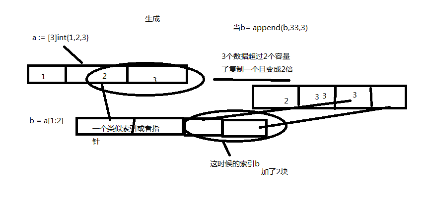

//var 变量名 [数组的容量]类型 = [数组的容量]类型{值1,值2}
var a [4]int = [4]int{1,2,3}
或者
var a = [4]int{1,2,3}
或者
a := [4]int{1,2,3}
//这几个的结果为[1 2 3 0]
//接受长度有赋值的长度决定
package main
import "fmt"
func main(){
var a = [...]int{1,2,3}
//a :=[...]int{1,2,3}
//但是无法使用var a [...]int = [...]int{1,2,3}
//只能var a [3]int = [...]int{1,2,3}
fmt.Println(a)
}
//结果为[1 2 3]var a []int = []int{1,2,3}
或者
var a = []int{1,2,3}
或者
a := []int{1,2,3}
//另外种方式用make创建
var a []int=make([]int,4,6) //长度4,容量6
var a []int=make([]int,4) //长度4,容量4
//只定义，没有赋值，空值是nil类型
func main(){
var a []int
if a ==nil{
fmt.Println("我是空的")
}
}
//切片全部取值
for i,v:=range 切片对象{
fmt.Println(i) //索引
fmt.Println(v) //值
}//如果有数组a := [4]int{1,2,3,4}
//我们要取第二个
b :=a[1]
//取第二个和第三个
b :=a[1,3]
//取第二个到最后一个
b :=a[1:]
//此时切片的b的长度由切区数组的个数决定
//此时切片的b的容量由切区数组从切的位置到数组末尾位置补充
数组变成索引其实切片就相当于创建了一个索引指向数组
切片或者数组里值发生变化,其对应数组或者切片均会受到影响
比如
package main
import "fmt"
func main(){
a := [3]int{1,2,3}
var b = a[1:2]
b= append(b,33)
fmt.Println(a,b)
}
//打印结果[1 2 33] [2 33]
//两个会相互受影响package main
import "fmt"
func main(){
a := [3]int{1,2,3}
var b = a[1:2]
b= append(b,33,3)
fmt.Println(a,b)
}
//打印结果[1 2 3] [2 33 3]
//两个不会受影响
//其实他底层发生了这样一件事件
//如果超过定长,底层会重新复制切片那一段数据且容量为原先的两倍
//而此时切片b的所有指向的位置也发送改变改变为新开辟出来的那段数据